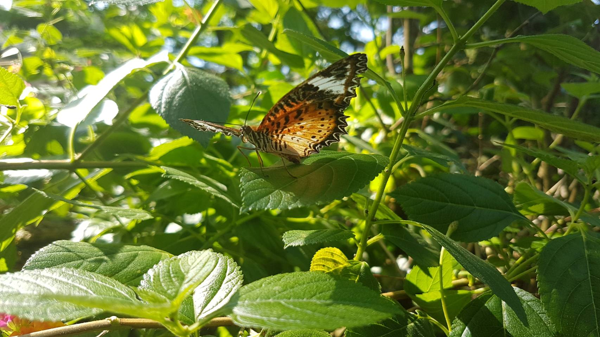
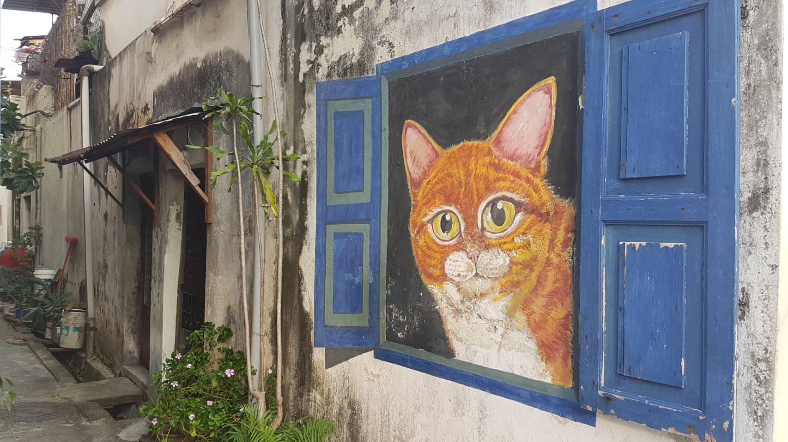
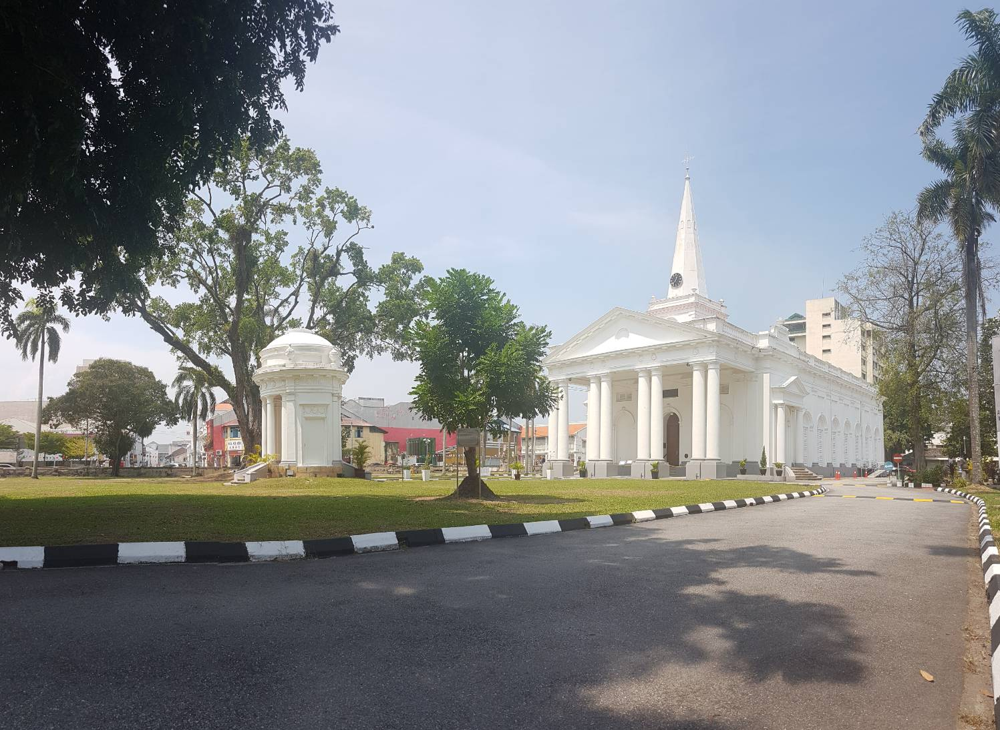

這裡記錄了我去馬來西亞檳城自由行時所去的景點和地方~ 雖然因為版面的關係所以沒能介紹全部的所見所聞(像榴槤園和一些食物真的都大推QQ!!!真心想去那裡玩怕踩雷的，都歡迎加我的LINE或IG來聊聊~)而且照片只放了零星幾張而已，但是還是希望能幫助到想去那裡旅遊的同學~所以可以點標題連結(裡面有介紹去到那必去的景點)以及我的IG裡面也會陸續更新出去玩的照片，還有下面介紹的那些地方也都有附上介紹連結~有興趣的同學都可以當做參考歐~!!!
Design by JINZHUN
這裡記錄了我去馬來西亞檳城自由行時所去的景點和地方~ 雖然因為版面的關係所以沒能介紹全部的所見所聞(像榴槤園和一些食物真的都大推QQ!!!真心想去那裡玩怕踩雷的，都歡迎加我的LINE或IG來聊聊~)而且照片只放了零星幾張而已，但是還是希望能幫助到想去那裡旅遊的同學~所以可以點標題連結(裡面有介紹去到那必去的景點)以及我的IG裡面也會陸續更新出去玩的照片，還有下面介紹的那些地方也都有附上介紹連結~有興趣的同學都可以當做參考歐~!!!

檳城蝴蝶園是世界上第一座蝴蝶養殖場，踏進去入口走沒多久就可以看到蝴蝶漫天飛舞，怎麼拍都可以拍出很美的照片!!除了蝴蝶也有很多其他可愛和不常見的生物(當然因為是昆蟲園，像蠍子蜘蛛蟑螂那種像動物園會出現的都會出現...)被蝴蝶停在身上的機率超級高!!(之前就被同一隻蝴蝶纏著不放了整路)如果喜歡蝴蝶和昆蟲想了解他們生態的人，個人推薦是必去景點之一歐~!!!(雖然門票不太便宜...)

藝術家 Ernest Zacharevic利用壁畫結合現實建築和物品，讓壁畫變成一幅突破次元壁的藝術，比較有名的《姐弟共騎》等壁畫就是利用了斑駁的牆面加上破舊的腳踏車營造出現實感，如果有閒暇時間，建議空出整個下午沿著大街小巷漫步，邊欣賞風景邊尋找壁畫歐~!!!(但想去的同學可能要有心理準備，很多著名的壁畫似乎都沒有修補維護什麼的，都破敗不堪甚至看不太出原本的樣子...照片中我拍攝的貓咪是少數幾張還色彩鮮艷能清楚辨識的壁畫了)

聖喬治教堂位於康華麗絲城堡以東的FARQUHAR街上，一樣位於喬治市內，它是馬來西亞最古老的英國教堂。這座莊嚴、宏偉的教堂之建築比例對稱，有大理石的地板及高高的尖頂。(雖然它不在10大推薦必去景點之一，但是因為它的建築設計真的很漂亮，藍天綠地和白色塔身相互輝映，看上去閃閃發亮~所以也是有不少遊客在拍照，如果繞完附近一些比較著名的市區:小印度區等，有空閒時間可以去附近走走看看~~)
我是台北土生土長的天龍人(??有點迷茫但依然在人生中努力掙扎前進的19歲，喜歡聽音樂唱歌繪畫等會跟大部分人重疊的嗜好，對於拍照有著複雜的情感，常常想留住每個當下卻發現自己框不住美和時間。擅長的事物不少，人生的各項技能值意外分布的很平均(就是樣樣行樣樣不精XD)，隱藏屬性是大吃貨、嚴重糖分中毒，平常大部分開銷都花在食物上，夢想是吃遍全球美食。